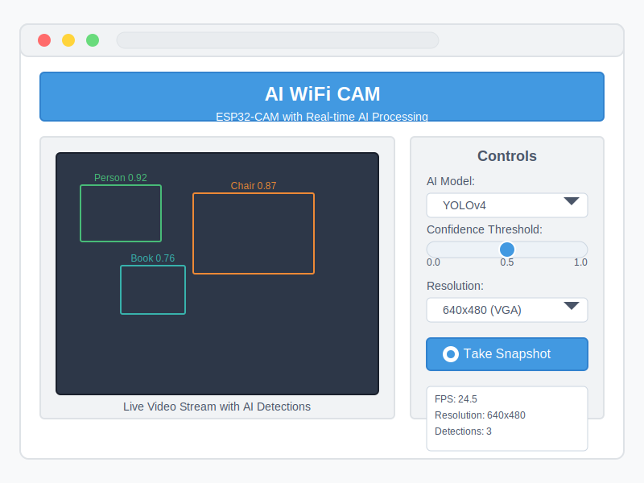

Starting the System
After completing the installation process, you can start using the AI WiFi CAM system.
Starting the Server
- Make sure the ESP32-CAM is powered on and connected to your WiFi network
- Open a terminal or command prompt
- Navigate to the AI WiFi CAM directory
- Activate the Python virtual environment:
# Windows venv\Scripts\activate # macOS/Linux source venv/bin/activate - Start the server:
python pc_code/stream_receiver.py - Alternatively, you can use the provided scripts:
# Windows run_ai_cam.bat # macOS/Linux ./run_ai_cam.sh
Accessing the Web Interface
- Open a web browser on any device connected to the same network
- Navigate to:
Where [PC_IP_ADDRESS] is the IP address of the PC running the serverhttp://[PC_IP_ADDRESS]:8080 - If you're accessing from the same PC, you can use:
http://localhost:8080
Web Interface
The web interface provides a user-friendly way to interact with the AI WiFi CAM system.
Interface Overview
Main Components
- Video Display: Shows the live video stream with AI annotations
- Control Panel: Contains controls for adjusting settings
- Status Information: Displays FPS, resolution, and detection counts
AI Models
The AI WiFi CAM system supports multiple AI models for different types of detection and recognition.
Available Models
| Model | Description | Use Cases |
|---|---|---|
| YOLOv4 | Object detection model that can detect 80 different object categories | General object detection, security monitoring, counting objects |
| MediaPipe Face | Face detection model optimized for real-time performance | Face detection, face counting, presence detection |
| MediaPipe Pose | Human pose estimation model that tracks key body points | Gesture recognition, posture analysis, activity monitoring |
Switching Models
- In the web interface, locate the "AI Model" dropdown in the control panel
- Select the desired model from the dropdown
- The system will automatically switch to the selected model
Note: Switching models may cause a brief pause in the video stream while the new model is loaded.
Adjusting Settings
The AI WiFi CAM system allows you to adjust various settings to customize its behavior.
Confidence Threshold
The confidence threshold determines how certain the AI model must be before reporting a detection.
- Locate the "Confidence Threshold" slider in the control panel
- Adjust the slider to the desired value (0.0 - 1.0)
- Higher values (e.g., 0.8) result in fewer but more confident detections
- Lower values (e.g., 0.3) result in more detections but may include false positives
Resolution Settings
You can adjust the resolution of the video stream to balance quality and performance.
- Locate the "Resolution" dropdown in the control panel
- Select the desired resolution from the dropdown
- Higher resolutions provide more detail but may reduce frame rate
- Lower resolutions provide higher frame rates but less detail
Taking Snapshots
The AI WiFi CAM system allows you to capture and save still images with AI annotations.
Capturing Snapshots
- In the web interface, click the camera button in the control panel
- The system will capture the current frame with all AI annotations
- The snapshot will be saved to the "snapshots" directory on the PC
Viewing Snapshots
- Snapshots are saved with a timestamp in the filename
- You can view the snapshots in the "snapshots" directory on the PC
- The web interface also provides a gallery view of recent snapshots
Keyboard Controls
When using the desktop display (not the web interface), you can use keyboard shortcuts to control the system.
Available Shortcuts
| Key | Function |
|---|---|
| q | Quit the application |
| s | Save a snapshot |
| p | Pause/resume the video stream |
| + | Increase confidence threshold |
| - | Decrease confidence threshold |
| 1-3 | Switch between AI models |
Advanced Usage
The AI WiFi CAM system provides several advanced features for power users.
Command Line Arguments
The stream_receiver.py script accepts several command line arguments to customize its behavior:
python pc_code/stream_receiver.py [options]
Options:
--host HOST Host IP address to bind the server (default: 0.0.0.0)
--port PORT Port to bind the server (default: 8080)
--model {yolo,face,pose}
AI model to use (default: yolo)
--threshold THRESHOLD
Confidence threshold (default: 0.5)
--no-display Disable desktop display window
--no-web Disable web interface
--debug Enable debug loggingMultiple Cameras
You can use multiple ESP32-CAM modules with a single PC:
- Program each ESP32-CAM with a unique identifier in the sketch
- Start multiple instances of the stream_receiver.py script with different ports:
python pc_code/stream_receiver.py --port 8080 --cam-id cam1 python pc_code/stream_receiver.py --port 8081 --cam-id cam2 - Access each camera through its respective port in the web browser
Custom AI Models
Advanced users can add their own custom AI models to the system:
- Create a new Python module in the pc_code/models directory
- Implement the required interface methods
- Register the model in the ai_processor.py file
For detailed instructions on adding custom models, see the developer documentation in the GitHub repository.
Tip: For the best performance, consider using a PC with a dedicated GPU. The system will automatically use GPU acceleration if available.